01 / 05
감천문화마을 · 로니 RONI
“우리의 여행은
이 골목에서 시작해!”
알록달록한 집 사이, 작은 골목마다 새로운 이야기가 숨어 있어요. 여행을 이끄는 탐험가 로니와 함께 부산의 색과 문화예술을 발견해 보세요.
NEXT CHAPTER
골목을 나서면, 씨토가 기다리는 활기찬 시장으로.
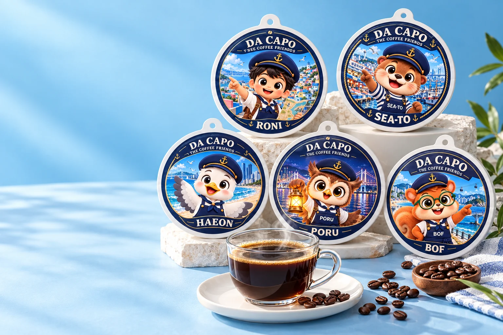
A LITTLE TRIP, IN EVERY CUP.
Five Friends, Five Stops,
One Busan Journey.
골목의 설렘부터 반짝이는 밤바다까지.
다섯 친구와 함께 부산의 순간을 펼쳐보세요.
FIVE FRIENDS. ONE COLLECTION.
각자의 장소에서 기다리던 친구들이 한자리에 모였습니다.
마음에 남는 풍경을 고르고, 나만의 커피 시간을 시작하세요.
MEET YOUR BUSAN GUIDES
다섯 장소, 다섯 가지 성격.
다섯 친구를 따라 부산의 이야기를 만나보세요.
감천문화마을 · 로니 RONI
알록달록한 집 사이, 작은 골목마다 새로운 이야기가 숨어 있어요. 여행을 이끄는 탐험가 로니와 함께 부산의 색과 문화예술을 발견해 보세요.
골목을 나서면, 씨토가 기다리는 활기찬 시장으로.
자갈치시장 · 씨토 SEA-TO
호기심 많은 바다 탐험가 씨토에게 시장은 이야기의 보물창고예요. 사람들의 목소리와 항구의 풍경, 부산의 활기와 먹거리를 함께 만나보세요.
시장의 활기를 뒤로하고, 보프와 송도 바다를 향해.
송도해수욕장 · 보프 BOF
가만히 있기보다 새로운 즐거움을 찾는 보프. 송도 바다에서 바람을 느끼며, 평소보다 조금 더 씩씩하게 여행의 다음 장을 열어보세요.
신나게 모험했다면, 해온과 해운대에서 잠시 쉬어 가요.
해운대 · 해온 HAEON
따뜻하고 활기찬 갈매기 해온은 바다에서 보내는 여유를 좋아해요. 해변을 바라보며 숨을 고르고, 여행 중 만난 좋은 순간을 천천히 떠올려보세요.
해가 기울면, 포루의 등불을 따라 광안리의 밤으로.
광안리 · 포루 PORU
등불을 든 야경 안내자 포루가 광안대교와 밤바다로 초대해요. 반짝이는 불빛 아래, 다섯 친구와 함께한 부산의 장면을 마음에 담아보세요.
여행이 끝나도, 한 잔의 커피와 함께 부산의 기억은 이어집니다.
캐릭터의 장소와 성격을 바탕으로 구성한 여행 이야기입니다.
UNBOX A LITTLE BUSAN
접으면 하나의 선물.
펼치면 다섯 친구의 여행 지도.
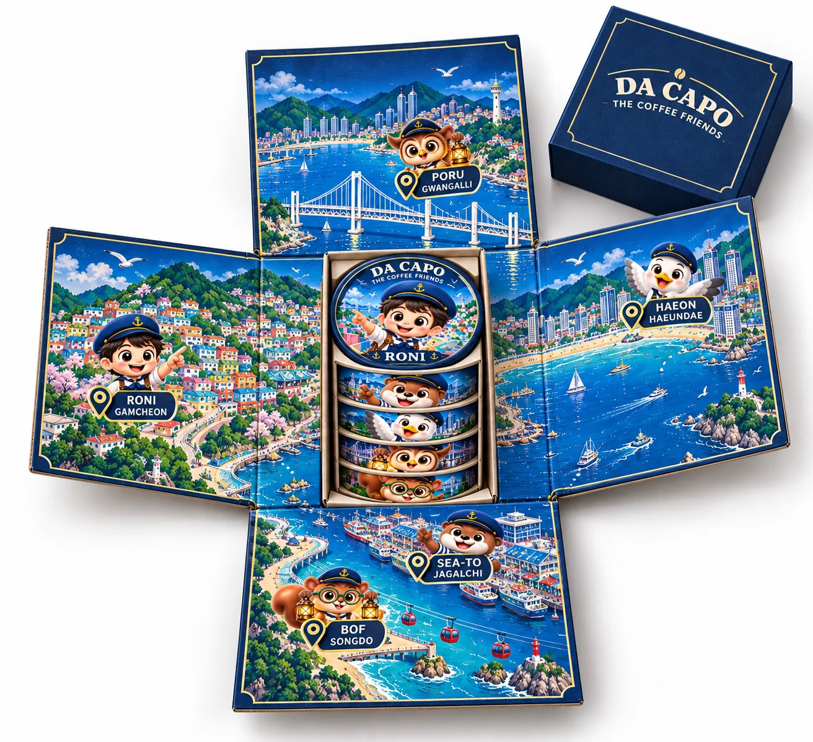
원형 팩을 층층이 담은 정육면체 수납 구조.
감천문화마을, 자갈치시장, 송도, 해운대, 광안리의 이야기를 펼쳐보세요.
커피를 고를 때마다, 좋아하는 풍경을 다시 만나는 시간.
BACK TO A GOOD CUP.
다 카포(Da capo), 처음으로 돌아간다는 뜻.
풍경을 고르는 설렘 뒤에는 커피를 내리는 작은 여유가 기다립니다.
캐릭터별 원두·풍미·중량 및 필터 사양은 확정 후 안내됩니다. 다섯 디자인이 서로 다른 맛을 의미하지는 않습니다.
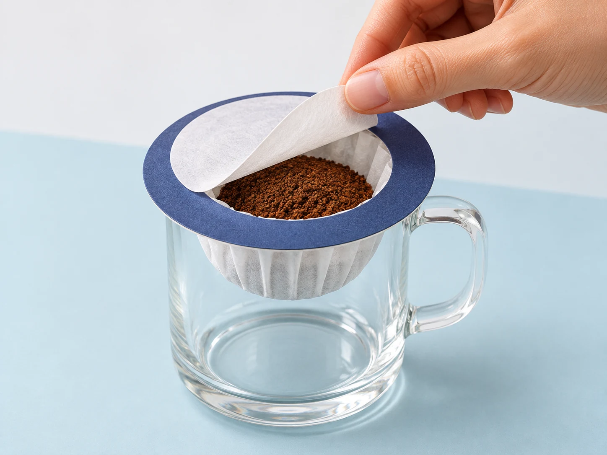
THE ROUND FILTERA SMALL FILTER. A GOOD CUP.
기존 다카포는 한지 기반의 국내산 여과지와
원형 융드립형 필터 구조를 소개합니다.
기존 다카포 제품 설명 기준입니다. 캐릭터 제품의 필터 사양은 확정 후 안내되며, 국내산 표기는 여과지에 해당합니다.
FOLLOW THE WATER
필터 안에서 물은 어떻게 흐를까요?
세 가지 형태를 함께 살펴보세요.
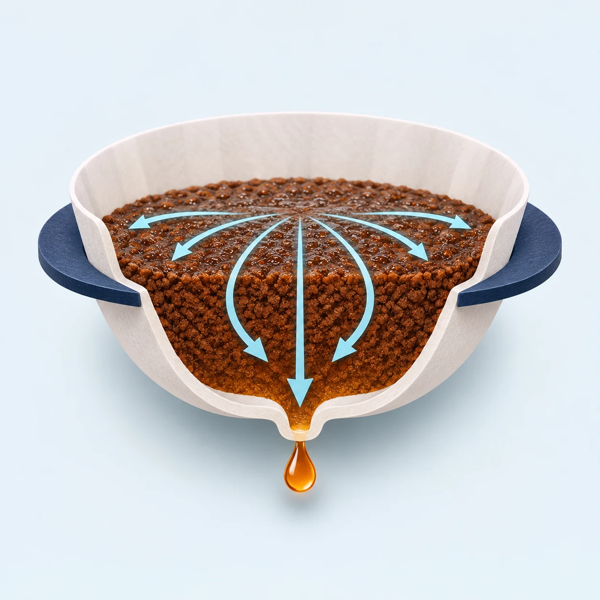
넓은 커피층에 물이 고르게 퍼진 뒤,
아래쪽 한곳으로 모이는 흐름.
기존 다카포는 원형 구조를 통해 균형 있는 추출을 돕는다고 설명합니다.
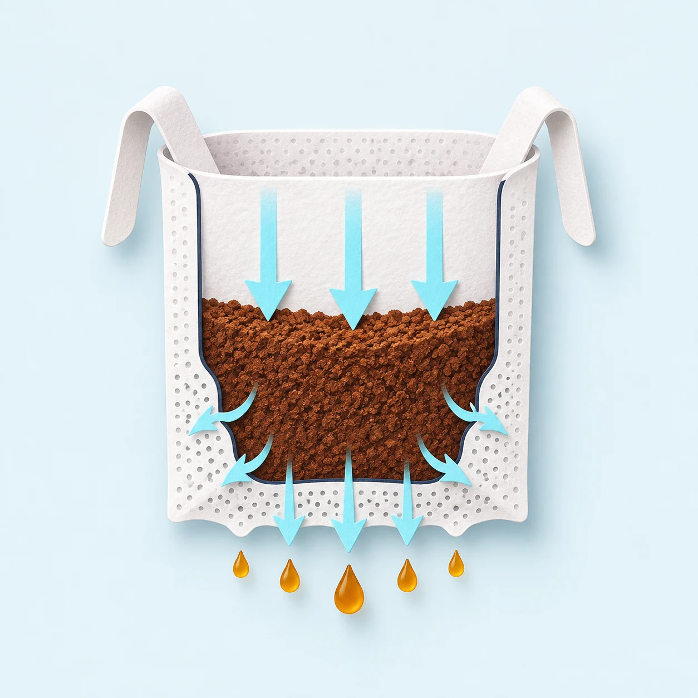
물이 커피층을 지나,
가장자리와 아래로 빠지는 흐름.
붓는 위치와 양에 따라 커피층이 젖는 정도와 물길이 달라질 수 있습니다.
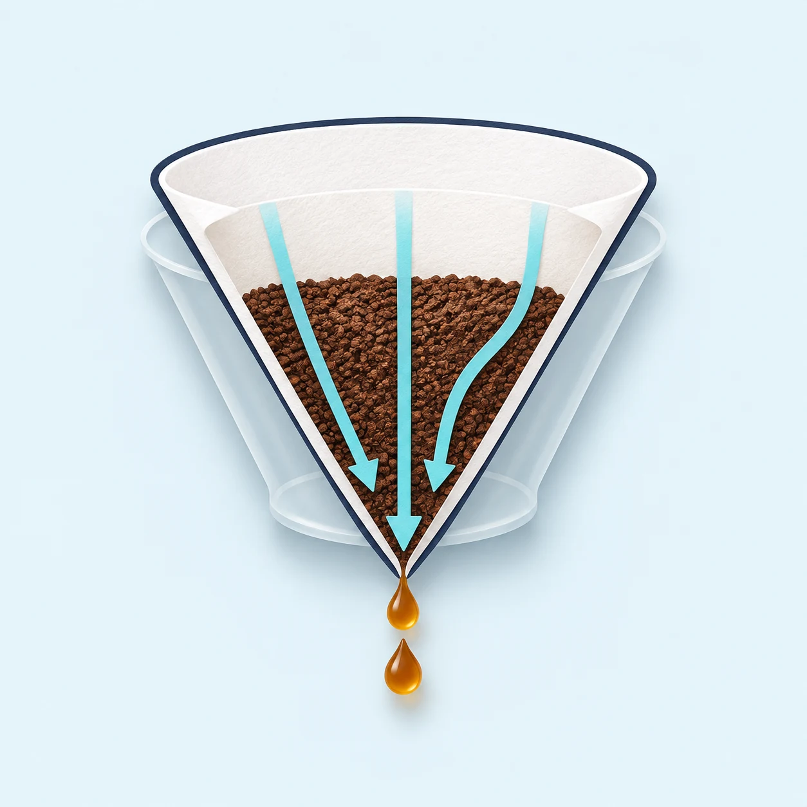
원뿔 모양의 커피층을 지나,
아래쪽 출구로 모이는 흐름.
물을 붓는 속도와 위치 등 추출 방식에 따라 맛의 표현이 달라집니다.
기존 다카포 안내를 바탕으로 재구성한 추출 흐름 개념도입니다. 실제 유체 해석이나 성능 시험 결과가 아니며, 필터·분쇄도·물 양·추출 방식에 따라 결과가 달라질 수 있습니다.
ORIGINAL DA CAPO / BLEND #E
Espresso
Blend #E
은은한 과일의 인상에 초콜릿과 견과류의 고소함.
부드러운 질감과 묵직한 여운을 소개하는 블렌드입니다.
기존 다카포 #E의 맛과 배합 정보이며, 캐릭터 5종의 원두나 풍미가 확정되었다는 의미는 아닙니다. 공식 제품 정보 ↗
A GOOD CUP, WHEREVER YOU ARE.
집에서도, 일하는 순간에도, 바다 앞에서도.
익숙한 일상에 작은 여행을 더해보세요.
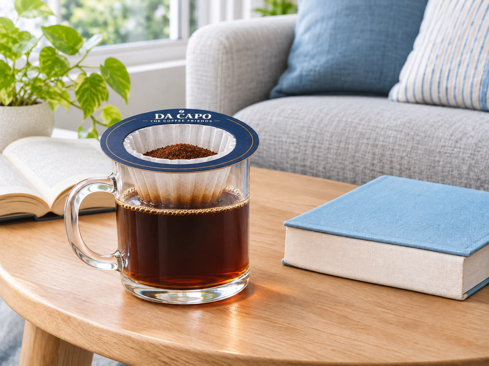
책장을 넘기는 시간, 좋아하는 자리에서
따뜻한 커피와 천천히 하루를 시작해요.
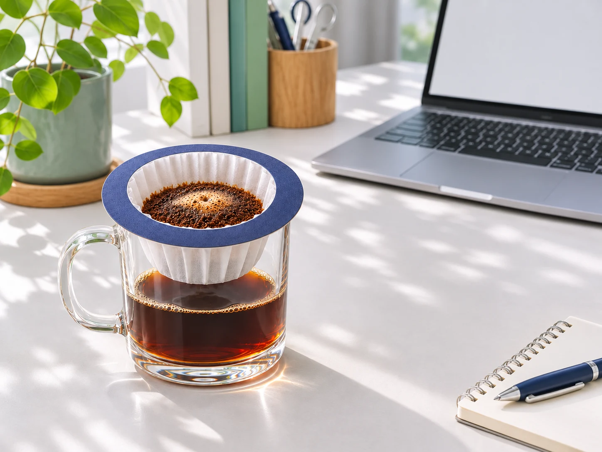
집중하던 일을 잠시 멈추고,
커피 향으로 나만의 쉬는 시간을 만들어요.
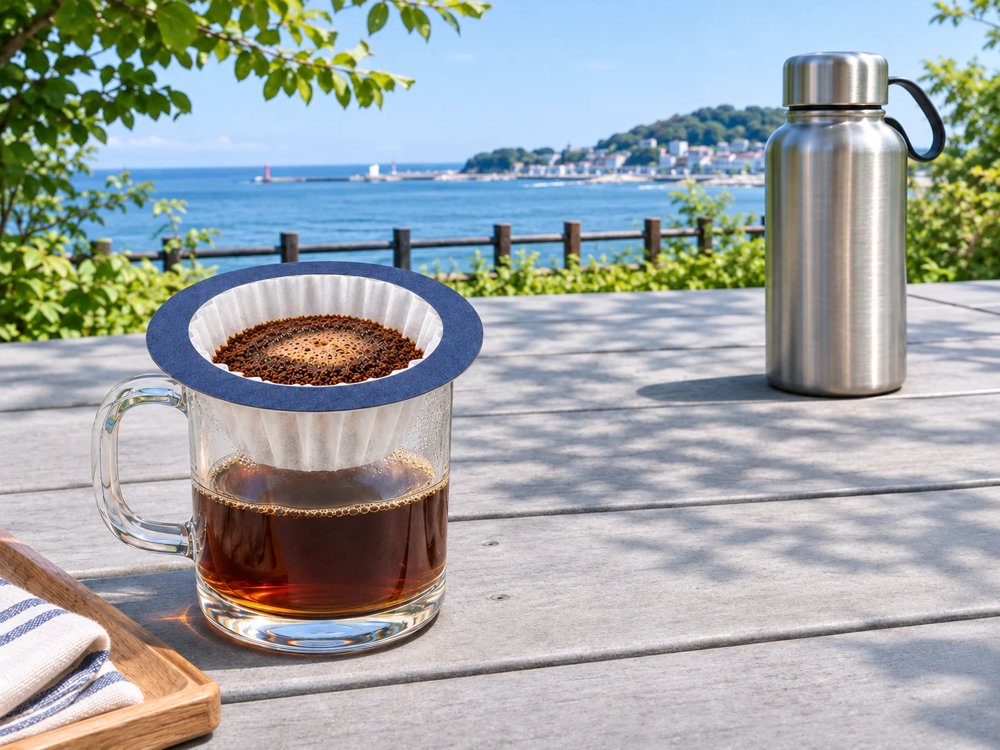
산책 끝에 마주한 바다 앞에서,
좋은 풍경과 함께 커피 한 잔을 즐겨요.
일상 속 활용을 표현한 AI 연출 이미지입니다. 컵·노트북·보온병 등 촬영 소품은 상품 구성에 포함되지 않습니다.
YOUR DAILY COFFEE MOMENT
작은 준비로 시작하는
나만의 커피 시간.
필터를 컵에 안정적으로 올리고,
윗면의 캡을 열어 준비합니다.
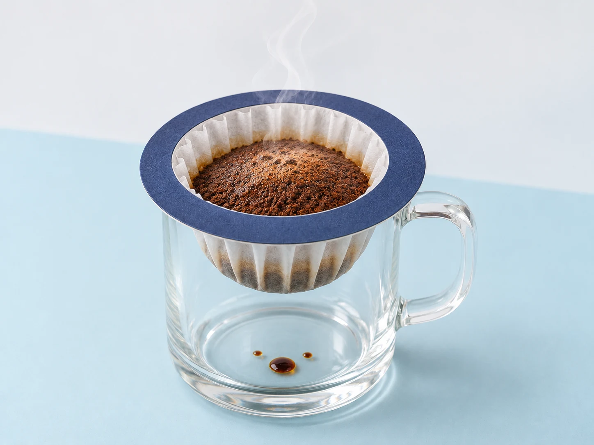
물을 한 차례 부은 뒤,
30초간 뜸을 들입니다.
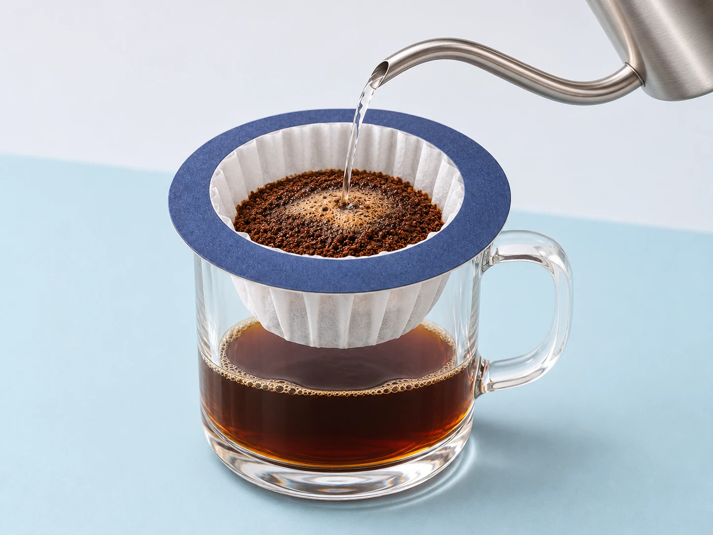
물을 붓는 과정을 두 차례 더 반복해
커피를 추출합니다.
필터를 제거하고, 기호에 따라
물이나 얼음을 더해 즐깁니다.
준비물 컵 · 드립팩 · 물
기존 다카포 사용법을 바탕으로 한 AI 연출 이미지입니다. 실제 제품과 다를 수 있으며, 최종 물 양·온도·시간은 제품 포장 안내를 따라주세요.
TAKE A LITTLE BUSAN WITH YOU.
개별 상품과 기업·기관 선물 문의는
부산커피협동조합을 통해 확인해 주세요.
이 페이지의 캐릭터·포장·연출 이미지는 촬영 자료를 참고한 AI 생성 콘셉트입니다. 실제 상품과 다를 수 있습니다. 판매 가격, 구성 수량, 배송, 맞춤 제작 조건은 기업 확인 후 확정됩니다. 지도는 관광 이야기용 일러스트입니다.